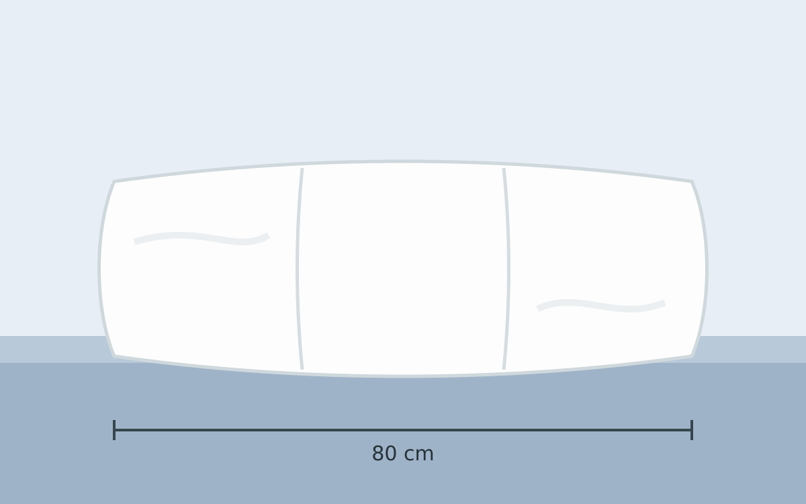

Das 3-Kammer-Kopfkissen "Brönning Daunenkissen" im Format 40 cm x 80 cm ist eine Enttäuschung. Für mich ist es viel zu weich. Wenn man sich hinlegt, sinkt man direkt bis zum Boden. Es ist schwer zu messen, aber ich vermute, dass vom Boden bis zur Oberkante des Kissens bei Belastung etwa 1cm Platz ist. Vielleicht finden manche Menschen das angenehm - für mich ist es etwas zu wenig.
{kind=link}

Es ist schön flauschig und macht optisch einen guten Eindruck. Es sieht auch sehr voluminös aus.
Es ist bei 60°C waschbar und trocknergeeignet.
Das Kissen wiegt insgesamt 900g. Es kommt in einer schönen Tragetasche - ideal für die Aufbewahrung oder den Transport.
Bezug
Der Bezug ist laut Herstellerangaben aus 100% Baumwolle gefertigt.
Füllung
Die Füllung ist laut Herstellerangaben aus 90% Daunen und 10% Federn. Allerdings steht auf dem am Kissen angenähten Zettel auch, dass 600g Daunen und 100g Federn verwendet wurden. Das wären dann 86% Daunen und 14% Federn.
Review
Man sinkt viel zu stark ein.
Gewicht: ...
Aufbau: 3 Kammern?
Verbesserungsvorschläge
- Tragetasche: Anstelle des großen "Save our World"-Aufdrucks könnte man den Inhalt beschreiben: "Brönning Kopfkissen, 40x80cm"
- Zettelgewirr: Anstelle der vielen Zettel am Kissen und der Tasche würde ich einen QR-Code besser finden. Der sollte zu einer Website führen, welche dauerhaft alle relevanten Informationen beinhaltet. Insbesondere Pflegehinweise. Der QR-Code sollte auch auf der Tasche sein. Beim Kissen wird der nach einigen Jahren sicher ausgewaschen.